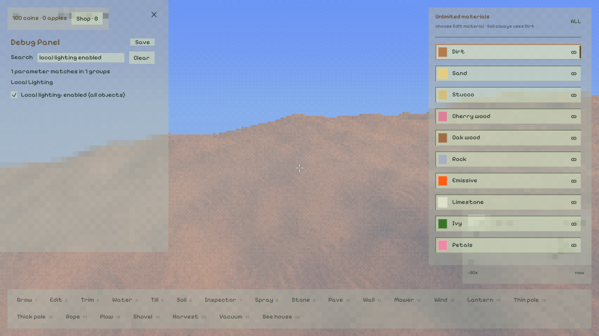

01 / TWO SHIPPED CHANGES
花回到普通受光材质，灯光计算交给一个总开关。
移除勿忘我的夜间发光
定位到小蓝花 Forget-me-not。原功能有两层：花瓣着色里额外叠加夜间自发光；CPU 每半秒收集附近蓝花，注册最多两个蓝色局部光源簇。
两层均已删除，不只是把某个强度设成零。原生三角形和模型预缓存两条花瓣绘制路径现在都只调用普通 meshShade；不再扫描花来发布光源，也不再因这件事触发 GI 更新。
花的物种、颜色、种植、生长和风不变。萤火虫是另一项功能，没有顺带移除。旧 RE_FLORA_NIGHT_FLOWER_LIGHTS_OFF 环境变量不再有用途。[1]
Debug → Local Lighting
✓Local lighting: enabled (all objects)
勾选：当前局部光照。取消勾选：地形、草、花、树叶、模型等消费者收到零个可求值局部光源，并停止 RIS／可见性缓存的局部光准备。新 DDGI 场也不再接收局部光与发光体的发光注入。
太阳、天光及其间接反弹保留；灯具和可见发光面仍在。来源对象、身份和编辑继续维护，重新开启时使用最新状态，不恢复旧缓存灯表。
默认勾选以保持已有行为。纯手动，不自动随昼夜切换；通过既有 Save 持久化，老配置补上该默认值。RIS、灯预算等偏好不会被总开关重置。[2]
切换时的时间边界：直射局部光在接下来的渲染帧停止求值；旧 DDGI 场含有的间接光会随新场构建／发布和后续收敛更新，不能保证切换一帧后每个间接光像素都归零。开关不停止整个探针更新系统，也不跳过太阳阴影。
实际 GUI：勾选与取消勾选

开启。搜索 local lighting enabled 可直接找到。关闭。截图来自无局部光源的独立 GUI workbench，不充当庭院性能证据。03 / WHAT PLANAR NORMALS ACTUALLY DOES
它改的是绘制时的着色法线，
不是墙的几何，也不是全世界的法线数据。
开关的完整名称是 Surface Normals → Plaster: planar normals (A/B; off = original)，默认关闭。原路径不是简单给所有体素一个轴向法线：表面提取本来就用半径 2 的占据邻域估计法线，打包存入可见 Contree 的表面数据；射线命中后读取它。[3]
对于有斜角的体素化平墙，半径 2 的窗口常常看到不同的阶梯相位：真实墙面方向没变，局部估计方向却轻微跳动。太阳的 max(0, dot(N, L)) 会把这种变化变成一条条明暗。Planar 的做法是从更宽范围的实际可见表面交点拟合一个局部平面，再拿平面的法线替换这一命中的临时 result.normal。不读取墙对象的设计角度，也不生成新网格。[4]
概念图，不是游戏截图或新的地形算法。强调“着色法线”和“真实轮廓”是两件事。
01 · HIT
命中已有表面
读取已发布几何、原法线与置信度，不读可能超前于可见发布的编辑 atlas。
02 · SAMPLE
3 × 9 个查询
水平步长 4、竖直步长 8 体素；从外侧向墙投射，筛掉过远、异材质和异朝向命中。
03 · FIT
最小二乘平面
拟合 h = a·u + b·v + c。拒绝支持不足、非平面折角和不合理的法线变化。
04 · SHADE
替换临时 N
影响太阳／局部光接收权重，以及 DDGI 接收方向和表面偏移。不重算 DDGI 体积。
不只是直射光滤镜。替换发生在正常地形着色之前，后续直射照明和 DDGI 接收查询都会用到这个法线；但不会改光源、材质色、体素占据、深度、轮廓或碰撞，也不会把阴影遮挡几何磨平。路径追踪参考与 DDGI 非最终调试视图刻意绕过它。
[5]
数学检查给出的证据
672 组量化平面／相位／缺行支持测试通过，折面、点和线被拒绝。在测试里的浅斜墙上：
原半径 2 法线的最大方向误差：10.886°
平面重建后：0.883°
原置信度最低仍达 0.998892：这不是“低置信度没亮起来”，而是高置信度法线仍存在方向量化误差。数字属于该数学夹具，不是所有墙的画质保证。[6]
边界不会硬磨成平面
至少 6 个有效交点，还要有二维支撑；拟合残差均方不超过 0.45² 体素²。重建方向与原方向的点积必须 ≥ 0.85，否则返回原法线。
这些门槛保护薄片、拐角、墙顶和真实几何变化。并不承诺所有白墙像素都能拟合，也不消除几何轮廓的体素台阶。
04 / WHY THE GROUND IS EXCLUDED
它没有识别“墙”。
它明确要求：Stucco，而且接近竖直侧面。
if (surface.voxel_type != VOXEL_TYPE_STUCCO ||
confidence <= 0.0 || abs(surface.normal.y) > 0.01)
return fallback;
这就是范围的直接所有者。普通地表即便走进函数入口，也会原样返回原法线；不是全地形已经优化、只是你没看出来。材质 ID 来自体素数据，不依赖物体名字、墙工具生成记录或 GUI 的选择状态。[4]
为什么没有直接泛化到地表？代码的拟合坐标专门针对竖直墙：主轴只在 X／Z 中选，另一个切向轴固定为竖直 Y。地表必须允许 Y 成为平面主轴，还要保护自然坡度、土堆弧面、山脊与材质边界。只删掉材质判断或朝向判断，不是正确的地形版本。
地面“锯齿”未必只有一种原因。同类的局部法线相位变化可能出现在斜坡上；但几何轮廓台阶、阴影可见性离散和 5×5 场景像素采样也会产生边缘感。这轮没有拿到你指的某个具体地表位置做归因实验，不能声称它一定是法线问题。合适的后续是先分离法线明暗、阴影与轮廓，再对真正平坦的地表补受约束的平面重建，而不是全地形一键磨平。
05 / WHY THE TOGGLE FEELS INSTANT
没有重建任务需要等。
下一帧只是走同一个已编译程序的另一条分支。
GUI
修改保存字段
planar_plaster_normals 直接绑定已有声明式 bool。
FRAME INPUT
每帧冻结值
进入 TerrainFrameInput；不改材质、植被、太阳或世界数据。
GPU UNIFORM
上传一个开关值
BufferUpdater 将 bool 转为 uint 写入 gui_input。
SHADING
取原 N 或拟合 N
两条路径都已编译。没有现场编 shader、CPU 重扫体素、网格重建或法线纹理重烘焙。[7]
直觉里“更新法线要很久”对应的是修改存储法线场、重建网格或重新提取整个体素世界。这里仅在当前命中的临时记录里改一个向量，且地表／非目标材质提前返回；没有把结果写回所有体素。只有正常最终地形着色的命中会受影响，不是在后台把整张地图都拟合一次。
流畅不代表免费。符合条件的可见命中每帧最多新增 27 次地形查询，再做小规模求和拟合。每次查询仍是实际 Contree 地形遍历；“超 64 体素的命中不接受”是命中后筛选，不等于查询自身只有便宜的固定 64 步。在大面积墙占屏时成本可能明显。本轮没有单独给 Planar 开关做 GPU 毫秒基准，不能从切换流畅推导“零性能代价”。
已有真实 egui 编辑／保存测试，以及 false→true→false 的帧输入测试通过：只有该 bool 改动，其他渲染输入不变。它能实时响应是已经实现的行为；“所有墙都无锯齿、没有额外 GPU 成本”不是这项测试证明的事情。
06 / VALIDATION & DELIVERY BOUNDARIES
能运行、能保存、能省时；边界不藏起来。
通过的验证
cargo fmt --check、cargo check、最终 cargo build --release。- 1849 项 app 测试、4 项 library 测试、1 项环境测试；另有 78 项 Vulkan 库测试通过。
- GUI 鼠标事件实际点选、搜索、保存重载、旧配置迁移；全局开关只改变对应环境输入。
- 同一 publication 上连续开／关，空／非空灯表都实际上传策略；关闭期间来源编辑不会重启相同零光照的 radiance identity，重开采用最新灯状态。
- 648 组 Slang ABI／flag／count 检查、672 组平面拟合检查通过；RIS／局部可见性既有测试继续通过。
- 10 项 Node 工具回归、12 次性能运行、6 张原生截图；运行正常退出，无 ERROR／panic／VUID。配置原字节恢复。
明确未通过／未声称
- 完整 Slang 套件前 49 项通过，第 50 项喷头接触测试失败：
failures=1 worst_area_integral_error=0.000126。既有 6386b512 基线独立程序同样失败；不是本轮修复范围。 - 没有单独测 Planar 的 GPU 开销，没有把数学夹具当完整视觉验收。
- 没有增加地表 Planar 模式，也没有改变原 Planar 的材质／方向边界。
- 没有把本机结果宣称为 Apple／MoltenVK 已通过。Glass 分支编译／ABI 回归通过，本轮没有新的 Glass 原生场景验收。
- GUI 与 GPU publication 的切换路径有行为测试；本轮原生性能 A/B 是独立进程，不伪称做过用户手动点选同一原生窗口的端到端时延测量。
复现与原始证据
cargo build --release
node --test scripts/validate-local-lighting.test.mjs scripts/validate-light-ris.test.mjs
node scripts/validate-local-lighting.mjs --case perf --output target/local-lighting-perf-new
node scripts/validate-local-lighting.mjs --case capture --output target/local-lighting-capture-new
输出目录必须不存在；不要和其他 app／GPU 工作并行。脚本临时设置昼夜、全局开关、八灯预算和原始局部光路径，并逐字节恢复配置。GUI 截图使用无灯源 workbench，与性能庭院分开。灯全局关闭不会阻止你单独保存 RIS 偏好。
本轮测量和截图使用的 Release 二进制 SHA-256：
8879e1ffa27309f866aca2f57a38dd353331bf2fb32df379a04fcbc6ed451901
交付分支：feature/async-grass-edits。本轮实现提交 59d3d346（移除夜花发光）、9f5ed544（全局开关）、c4de2b60（原生测量工具）。报告与证据另行提交。此前七个 RIS 本地提交也包含在这条分支中；不触发发版、tag 或 main 分支发布。
最终操作顺序为：全部提交 → 推送当前分支 → 核验远端 ref 与本地 HEAD 相等 → 再发送正常关机请求。任何推送／核验失败都不冒充已同步，也不在失败状态下继续关机。系统的关机权限预检返回 yes；它不是“机器已经关机”的证明。